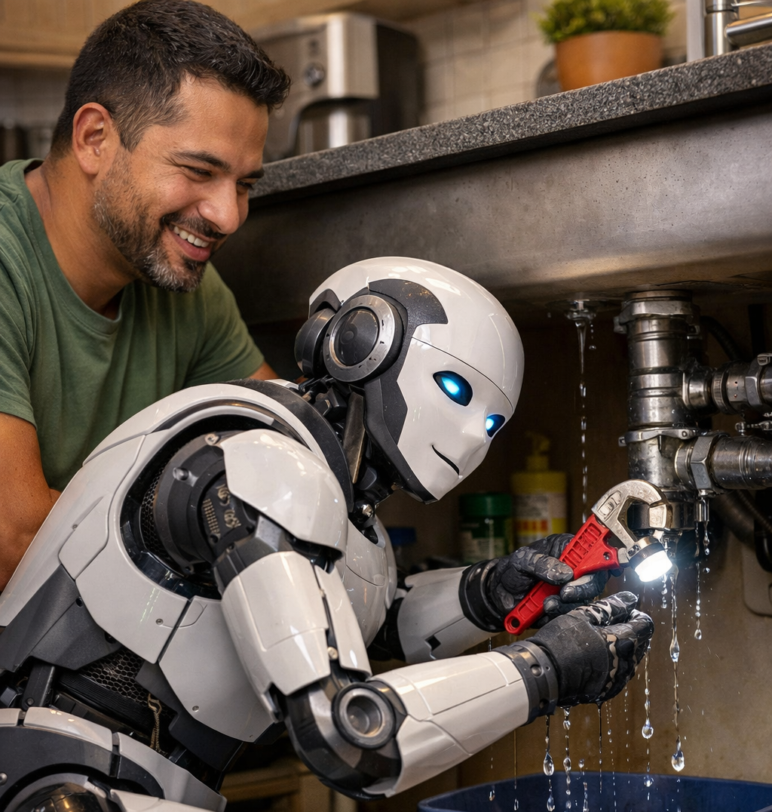
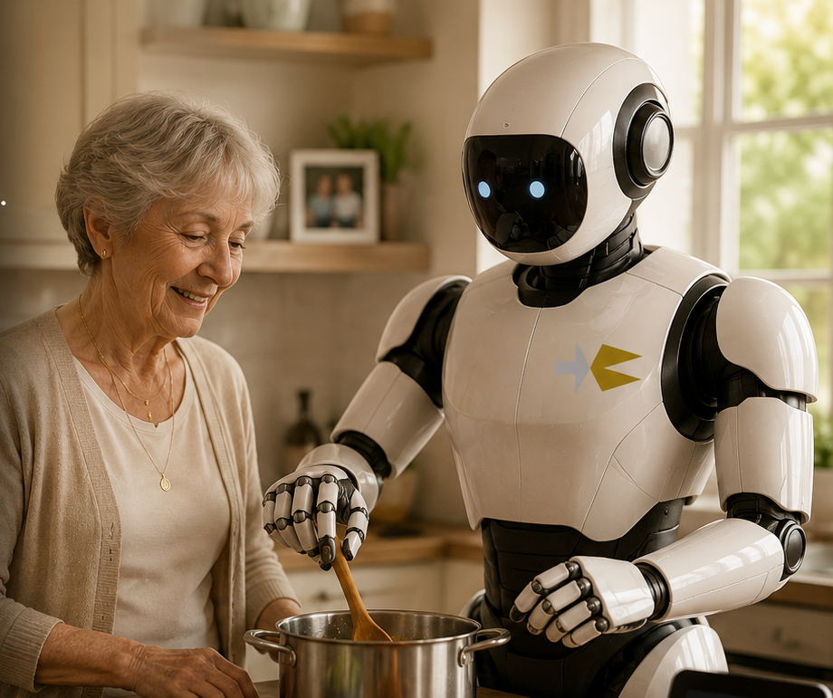

Aisha Raman
“Daily chores went from overwhelming to effortless.”
Before our Neo I arrived, we spent hours every evening cleaning and cooking, and it drained our energy. Now the robot handles everything from sweeping to prepping dinner, giving us back nearly 10 hours a week. I didn’t expect it to feel this natural having a humanoid robot around, but it’s become part of our routine. We finally get to enjoy our evenings together instead of rushing through chores
Miguel Alvarez
“It saved us from expensive repair calls.”
I used to dread calling repair services for every small issue, and the costs added up fast. After getting the Phantom II, it fixed a minor leak in minutes and now handles routine maintenance without me lifting a finger. We’ve cut our repair expenses by over 40% in just three months. It feels like having a skilled helper on standby at all times.

Grace Whitmore
“My mother feels safe and independent again.”
Before we bought the Nova Sigma III, my mom struggled with daily tasks and felt unsafe living alone. The robot now cooks, helps with laundry, and even patrols the house at night, giving her confidence and giving us peace of mind. She says it’s like having a gentle, reliable companion who never gets tired. Her independence has increased more than we imagined.
